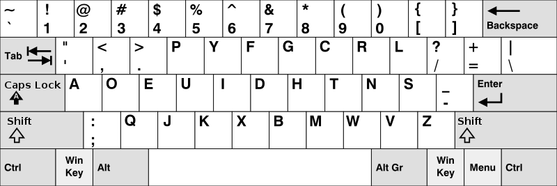

Introduction to Keyboard Layouts
QWERTY Layout and its Origins
QWERTY was designed to prevent jams between the mechanics on typewriters. We no longer use typewriters, so the question remains: is QWERTY best for our current uses? QWERTY does not make a typer or programmer slow, and when typewriters are thought of using QWERTY, it's typically the learning curve that makes them slower.
Enter Dvorak:
August Dvorak and his brother-in-law created the new keyboard layout - specially designed to be faster and more ergonomic. It did not quite convince the crowds; however, it did show some potential for people who wanted to take typing speed to the pinnacle while also enticing users who used special keys often (Programmers).
Dvorak vs other layouts
There were many keyboard layouts that showed promise - the primary ones being Colemak, AZERTY, COLEMAK, and some other more interesting ones such as the Workman layout. Any keyboard layout can do what you need it to do if it has the keys... QWERTY and AZERTY are more known for their historical prevalence. The two main competitors to Dvorak are Colemak and Workman layout. The main key points of the Dvorak layout are the way the keys are placed for alteration between the two hands - equal distribution of work for hands. Colemak has more of a 'rolling' approach - for example, all letters for ien or rst are put together to allow for rapid execution - rst can instantly become wo-rst. Workman attempts to move away from the typical hand/finger postures - letting fingers find more ergonomic approaches.

History and Development of the Dvorak Layout
The Vision of Dr. August Dvorak
Purposely designed to be better than QWERTY - extensive research by August Dvorak and his brother William went into finding typing patterns and finger movement. The layout hoped to achieve minimal finger movement. Once again - blocked by QWERTY... however, in the typing and programming/coding communities, Dvorak is associated with efficiency, typing speed, and comfort.
Adoption Over Time
With the advance of technology, it became easier and easier to swap out a keyboard layout. Even today - one does not need to actively switch layouts to try it, websites such as keybr or monkeytype exist and can emulate the layout for each individual. The increase in accessibility has led QWERTY alternatives to rise, and with the added benefits along with its prevalence in the programming community, Dvorak has risen sharply.
Why Programmers Prefer Dvorak
Well, why wouldn't they..
Dvorak allows programmers to have much more comfort when typing for longer - allowing programmers to focus more on their thinking and processing instead of being distracted by fatigue. The comma and period are also much more conveniently placed for programming allowing for greater continuity. The reputation is already built even if it is not as great as QWERTY, so there are no risks, only the learning curve....
Transitioning to Dvorak
Learning Curve.
Changing a keyboard layout can indeed be a complicated and lengthy process - there are also some decisions that must be made. Typically, it's best to completely switch, but beware that if you do that you will gradually lose your ability to type in QWERTY. For me, QWERTY was the first layout I learned, but I decided to keep practicing it over time while learning other layouts - and now I can switch between them very rapidly. A great example of this is from a YouTuber called "Jashe Poon" who makes an incredible wpm record of switching between 3 layouts in one run on monkeytype "layout fluid" mode (a mode that mixes typically Dvorak QWERTY and Colemak).
Tools and software.
It was briefly mentioned before, but there are very good websites to use without needing to immediately swap the computer's layout or change the keys on the keyboard. (We do not need to change the keys on the keyboard!). I highly suggest using keybr, though monkeytype with the right settings is definitely doable.
Typing communities/help.
The typing community (speed typing) has seen massive growth over the past few years and with the expansion of the internet, it is much easier to find other typing enthusiasts. One very great and notable YouTuber is "NoThisIsJohn", who also has a Discord server with quite the typing community. Keybr also helps the user work on weaker letters. Keybr and monkeytype (if configured correctly) can both show an on-screen emulated keyboard to help the learning process.
Summary and FAQs
AI Generated Summary:
"Why Dvorak Dominates Among Programmers" navigates the ergonomic and efficiency-driven landscape of the Dvorak keyboard layout. Authored by an individual with firsthand experience transitioning to Dvorak, the article explores its design principles, historical development, and practical advantages over traditional layouts like QWERTY. By juxtaposing Dvorak with alternative layouts such as Colemak and Workman, the article highlights its growing prominence in the programming community. Additionally, it addresses various communities and tools, underscoring the rising accessibility and support for Dvorak adoption. With a focus on enhancing comfort, speed, and productivity, Dvorak emerges as a compelling choice for programmers seeking optimal typing experiences.
Frequently Asked Questions:
[No current asked questions, please ask away]
If you found the information on Dvorak interesting, make sure to check out the alternatives - Colemak and Workman layout are really good competitors.
![[Image of keyboard heatmaps]](https://cdn.arstechnica.net/wp-content/uploads/2014/03/dvorak3.jpg)